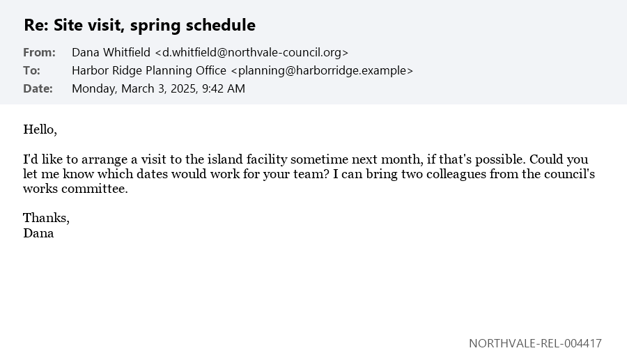

Verify design preview. Sample text and labels from the handoffs
"Inline claim labels on a news article" and "Default view vs. X-ray view". All examples are invented.
Tap a mark or chip to open its card. Use X-ray in the corner chip to show every label.
Narrow the window to see the phone layout.
News article
Rumors spread that newcomers in the town of Brookhaven are stealing pets
City officials said they found no credible reports of pets being harmed by new residents. At a packed meeting on Tuesday, one speaker repeated the claim that started it all: "They're taking people's pets." The town is overwhelmed by the pace of change. Some residents say they feel unsafe. A local group says the newcomers are organizing a secret pet market on weekends.
Forum thread
Billionaires in Northvale pay too little in taxes. Last year, 12 of the 20 richest residents paid no city income tax. Back in 1960, the top rate was 70%. The new transit levy will fix the bus system within two years. The mayor secretly wrote the levy to help his donors.
Post with an exhibit (an invented email screenshot)
PROOF Whitfield went to the island

The released emails show she was there in April 2025.
Labels that imply intent (three layers) and charged words
Councillor Reed gave a Nazi salute at the Northvale rally.
Dark-mode comment (one sentence, three labels)